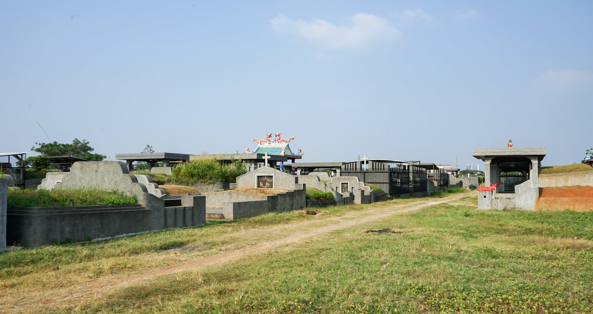
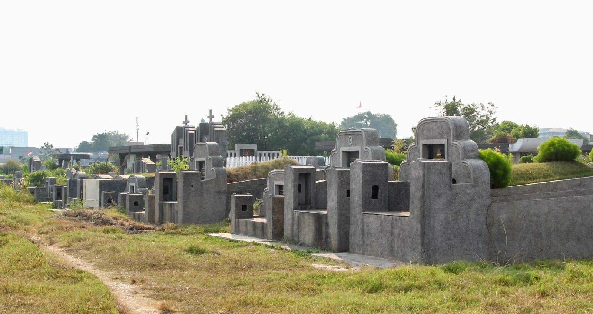

Perkumpulan Boen Tek Bio mengelola area pemakaman perhimpunan di TPU Tanah Gocap dan TPU Tanah Cepe Karawaci Tangerang, merawat makam para leluhur dengan tertib, asri, dan teratur.
Area Pemakaman Utama
1. TPU Tanah Gocap Tangerang
Kompleks pemakaman Tanah Gocap telah lama menjadi tempat peristirahatan terakhir bagi warga Peranakan Tionghoa dan masyarakat Tangerang. Area ini dikelola dan dipelihara secara rutin oleh seksi pemakaman Perkumpulan Boen Tek Bio.
📍 Lokasi:
Jl. Imam Bonjol No. 41, RT 002/RW 003, Kelurahan Karawaci, Kecamatan Karawaci, Kota Tangerang, Banten 15115
Menyediakan area makam keluarga, perawatan kebersihan rumput makam, dan fasilitas peringatan ziarah Ceng Beng (Qingming).

Kawasan gerbang masuk TPU Tanah Gocap Karawaci Tangerang.

Area makam perhimpunan di TPU Tanah Cepe Tangerang.
Area Pemakaman Pendukung
2. TPU Tanah Cepe Tangerang
Berjarak tidak jauh dari kawasan Tanah Gocap, area pemakaman Tanah Cepe melengkapi sarana peristirahatan bagi umat dan warga perhimpunan Boen Tek Bio.
📍 Lokasi:
RT 004/RW 001, Kelurahan Karawaci, Kecamatan Karawaci, Kota Tangerang, Banten 15115
Informasi perizinan makam baru, pemindahan kerangka, dan iuran pemeliharaan makam dapat ditanyakan langsung ke Sekretariat Boen Tek Bio.
Informasi & Pengurusan Izin Pemakaman
Untuk informasi ketersediaan petak makam, surat keterangan pemakaman, serta penjadwalan prosesi pemakaman, silakan hubungi bagian pelayanan sosial: